작성자: 김채린
지난 7월 1일부터 3일까지, 대구 EXCO에서 열린 2026 제41회 제어·로봇·시스템학회 학술대회(ICROS 2026)에 우리 연구실이 다녀왔습니다! 3일간의 일정 중, 오늘은 그 첫날 이야기를 전해드리려 합니다.
ICROS 학술대회는 제어·로봇·시스템학회가 매년 주최하는 국내 최대 규모의 제어·로봇 분야 학술행사예요. 올해로 41회를 맞은 이번 학회는 "AI와 함께 진화하는 제어·로봇"을 주제로 보행, 재활, 외골격부터 자율주행과 소방재난 로봇까지 폭넓은 분야의 세션이 동시에 열려서, 어느 방에 들어갈지 고민하는 것부터가 즐거운 고민이었어요.
첫날은 다 같이 움직이기보다 각자 사정에 맞춰 대구로 향했습니다. 도착해서 묵었던 숙소도 이야기하지 않을 수 없는데요, 5성급 호텔인 대구 인터불고 에서 지냈습니다. EXCO 바로 앞이라 걸어서 몇 분이면 오갈 수 있었어요. 짐을 놓고 바로 학회장으로 넘어갈 수 있었던 것도, 급하게 뭔가 챙기러 갔다 와야 할 때도 동선이 짧아서 정말 편했습니다. 숙소 컨디션도 좋아서 첫날부터 마음 편하게 지낼 수 있었던 것 같아요.
이제 하나둘 등록을 마치고 모이다 보니, 어느새 우리 연구실의 1일차는 오후 발표와 함께 시작되고 있었습니다.
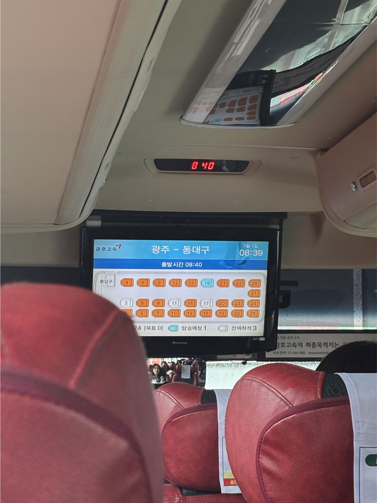
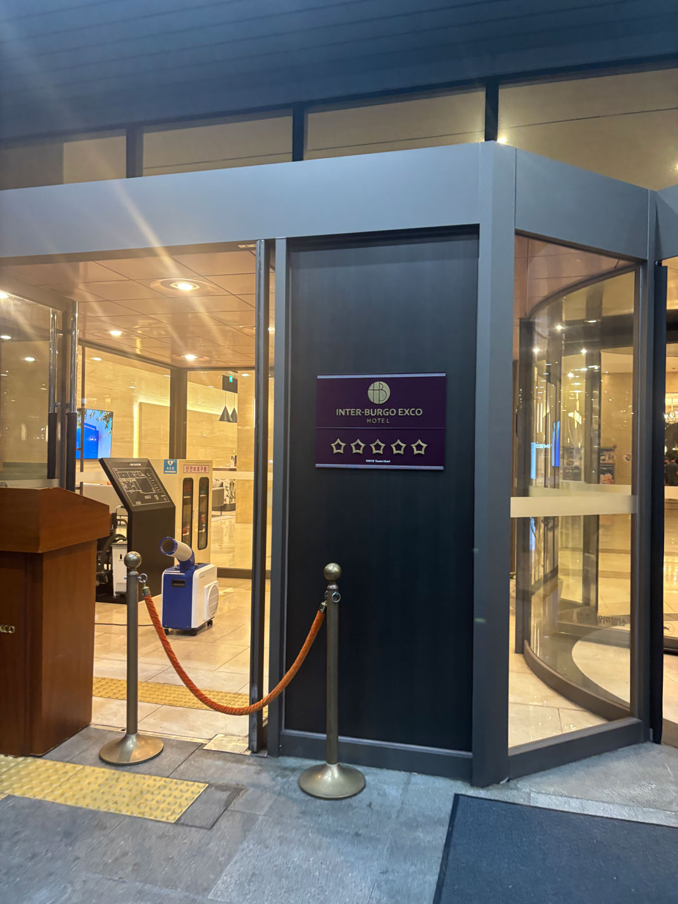
오후 2시 10분, Room 07(321B)에서 [WB07] 외골격 및 재활 로봇 1 세션이 시작되었습니다. 이 세션은 허필원 교수님께서 좌장을 맡아주셨고, 총 10편의 발표 중 무려 7편이 우리 연구실의 연구였어요. 한 방 안에서 우리 연구실 발표가 연달아 이어지다 보니, 세션 내내 묘한 긴장감과 든든함이 동시에 감돌았습니다.
김래헌: TCN with Multi-Head Attention for Subject-Independent Hip Joint Moment Estimation Across Diverse Gait Conditions
배성환: Autoencoder 기반 보행 근육 시너지 추출의 재구성 및 모듈 구조 검증
김성현: 착용 편의성을 고려한 동력 무릎 보조기의 디자인 제안
박수영: 하지 외골격 로봇의 부드러운 보행 전환을 위한 시그모이드 기반 연속 운동 상태 추정
박혜원: 측정 노이즈에 강건한 Cosine 스케줄 노이즈 증강 기반 Bi-LSTM 관절 임피던스 추정
차명주: 평지보행에서 PCA 보정 커널 매칭을 이용한 보행 속도 및 연속 보행 위상 동시 추정
문선웅: 확산 모델과 미세조정 모델의 지식증류를 통한 실시간 보행 이벤트 및 진행률 추정 모델 개발
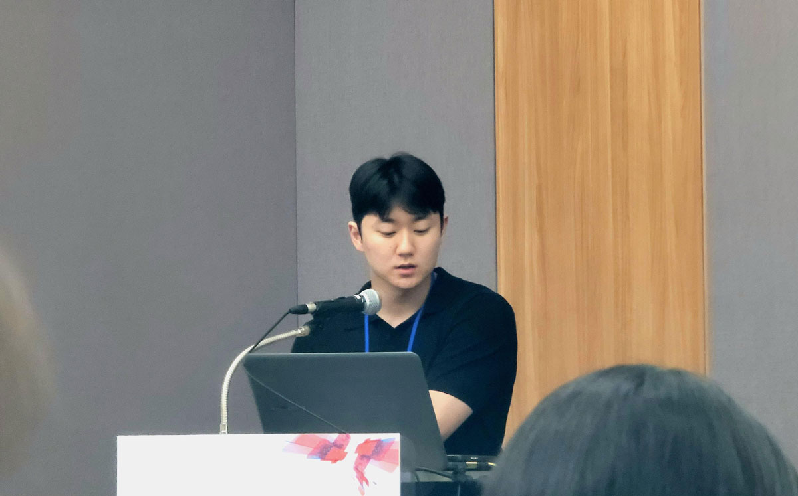
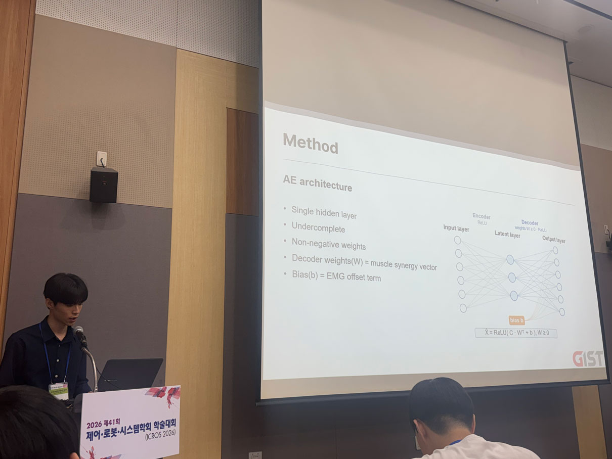
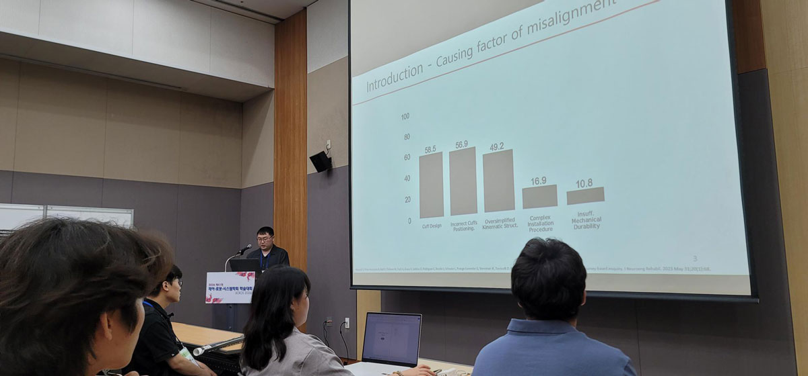
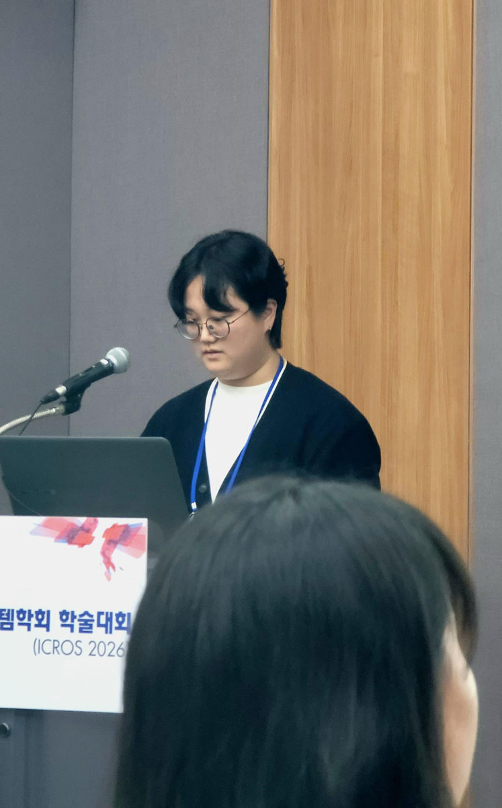
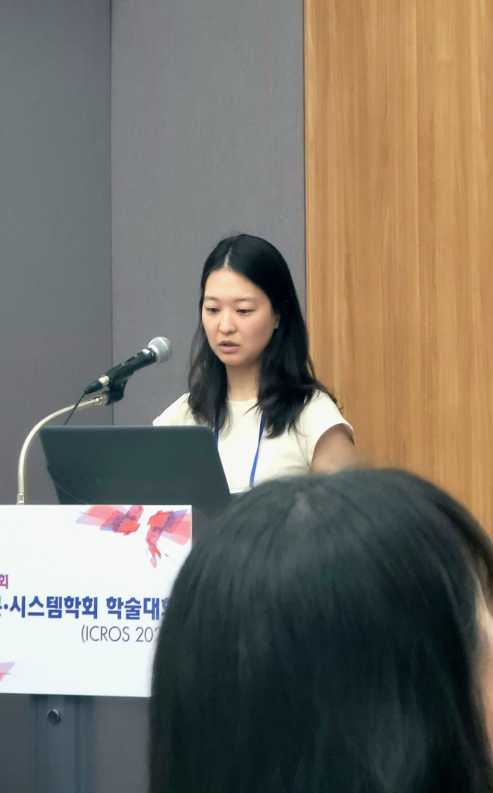
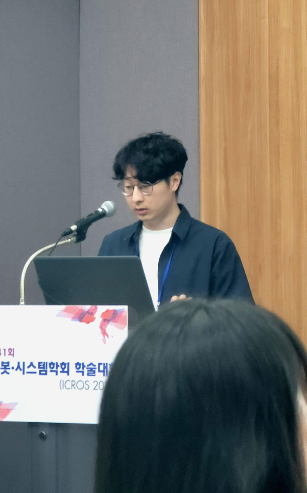
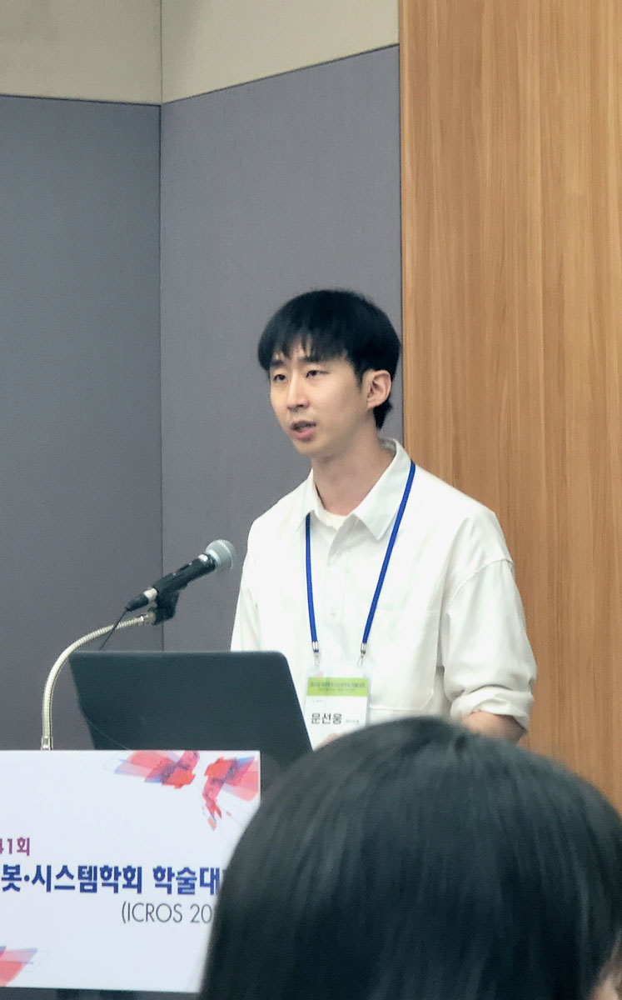
그랜드볼룸 A에서는 학회 기간 내내 연구실 소개 포스터 전시가 진행되었습니다. 우리 연구실도 성지윤 선배가 준비한 Dynamics and Biomechatronics Lab (HUR Group) 포스터로 참여했어요. 세션 사이사이 오가며 다른 연구실들이 어떤 주제를 다루고 있는지 구경하는 재미도 쏠쏠했습니다.
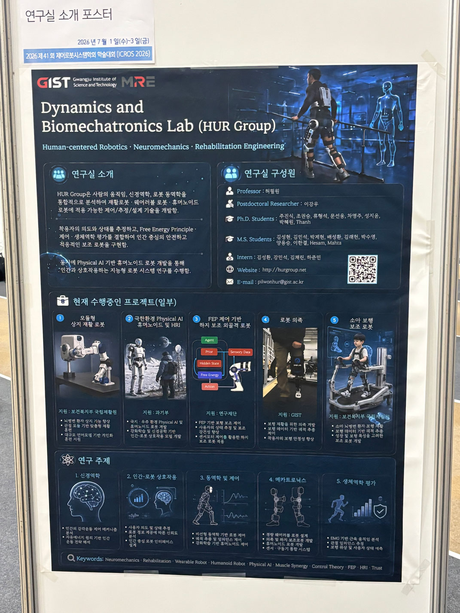
오후 5시부터는 같은 Room 07에서 [WC07] 외골격 및 재활 로봇 2 세션이 이어졌습니다. 이 타임에서도 우리 연구실의 발표 4편이 이어졌어요.
Hesam Haddad: A Privacy-Preserving Local RAG System for Rehabilitation Knowledge Assistance
성지윤: 작은 외란에서 인간 균형 제어를 위한 전략 기반 토크 패턴 분석
Mahta Akhyani: Real-Time State Anxiety Estimation for Adaptive Wearable Exoskeleton Control
박제현: 3자유도 상지 재활 외골격 로봇의 다중 Waypoint ADL 궤적 최적화 및 Backtracking 기반 선정
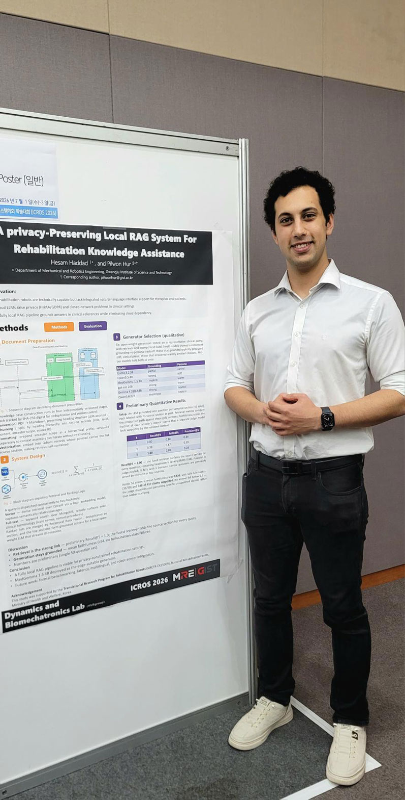
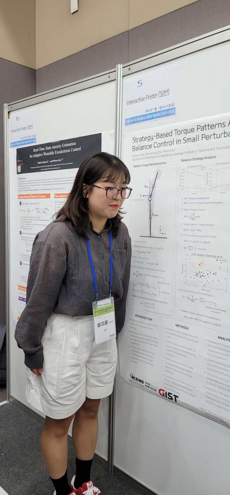
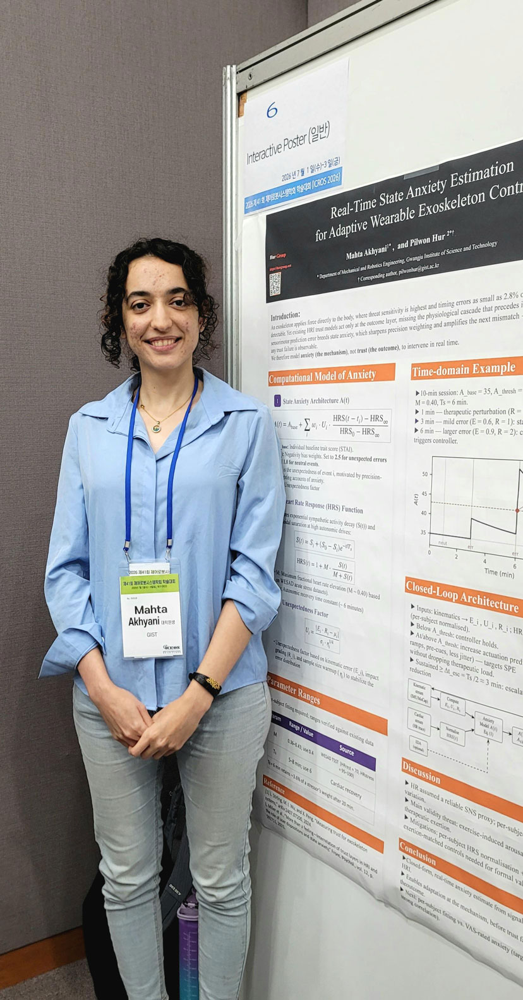
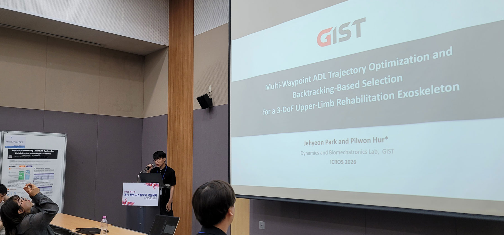
저녁 6시 40분, 325호에서 Welcome 치맥파티가 열렸습니다! 사실 1일차에 가장 기대했던 시간이었는데요. 발표를 무사히 마친 뒤라 마음이 한결 가벼워진 상태로 참석할 수 있었습니다..! 어려운 연구 이야기보다는 "오늘 다들 수고했다", "내일 발표하는 사람들은 오늘 밤 고생 좀 하겠다" 같은 가벼운 대화가 오갔어요. 시원한 맥주와 더불어 맛있는 치킨과 함께 발표의 긴장이 스르르 풀리며 웃음이 많아졌던, 첫날의 가장 즐거운 시간이었습니다.
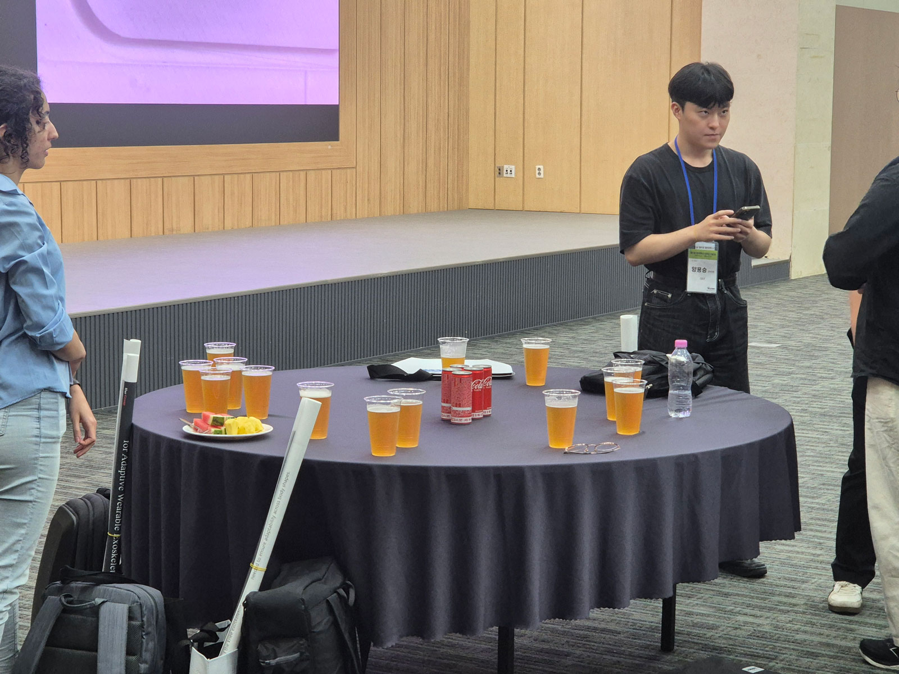
준비한 연구를 사람들 앞에서 이야기하고, 질문을 받고, 또 다른 연구자들의 고민을 들어보는 사이 어느새 첫날이 저물어 있었어요. 발표가 끝난 홀가분함 때문이었을까요, 몇몇은 치맥파티 이후에도 자리를 옮겨 술을 더 마셨다고 들었습니다. 소문으로는 7, 8명이서 14병 넘게 마셨다는 이야기도… 진위는 알 수 없지만 그만큼 다들 신나는 밤이었던 것 같습니다. 2일차 이야기로 곧 다시 찾아오겠습니다.
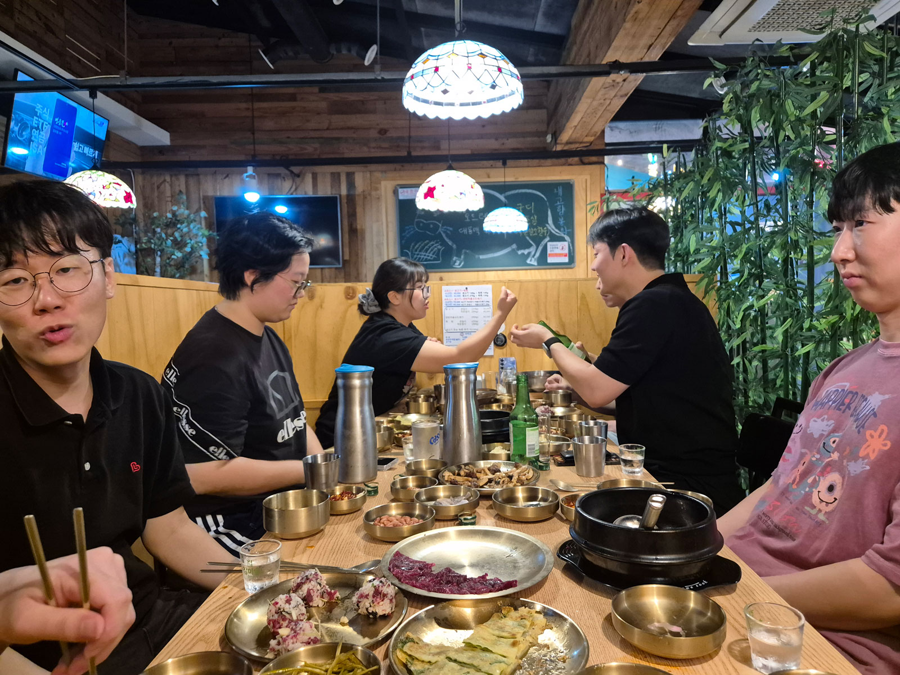
작성자: 양용승
지난 글에 이어, 대구 EXCO에서 열린 2026 제41회 제어·로봇·시스템학회 학술대회(ICROS 2026)의 2일차 이야기를 전해드리려 합니다.
첫날에는 다른 발표를 들으며 학회 분위기를 익혔다면, 2일차에는 저를 포함해 첫날 발표하지 않았던 연구실 구성원들의 발표가 예정되어 있었습니다. 저에게는 처음 참석한 학회인 데다 직접 발표까지 해야 하는 날이어서, 평소보다 조금 긴장된 상태로 학회장에 향했던 것 같아요.
2일차에는 휴머노이드 로봇의 관절 메커니즘부터 강화학습 기반 보행 제어, 외골격 로봇, 빔 게이팅 메커니즘, 다족 보행 로봇까지 다양한 주제의 연구가 발표되었습니다. 그리고 오후에는 연구실 구성원들의 발표도 하나둘 시작되었습니다.
김민석: 강화학습 기반 이족보행에서 무릎 신전 보행과 굴곡 보행의 에너지 효율 및 외란 회복 성능 비교
김민석: DeepMimic-CLF: 모션 모방을 위한 Lyapunov 기반 보조 보상 설계
Nguyen Van Thanh: Design and Control of a 2-DOF Parallel Ankle Mechanism for Humanoid Robots
주진식: 조사 시간 제어를 위한 이중 회전체 기반 빔 게이팅 메커니즘의 설계 및 시뮬레이션
김성환: 사용자 중심 Hip Exo-Skeleton 개발
양용승: 다리 손상 환경에서 Hexapod 로봇의 안정적 보행 회복을 위한 Tripod 구조 기반 에너지 안정화 방법
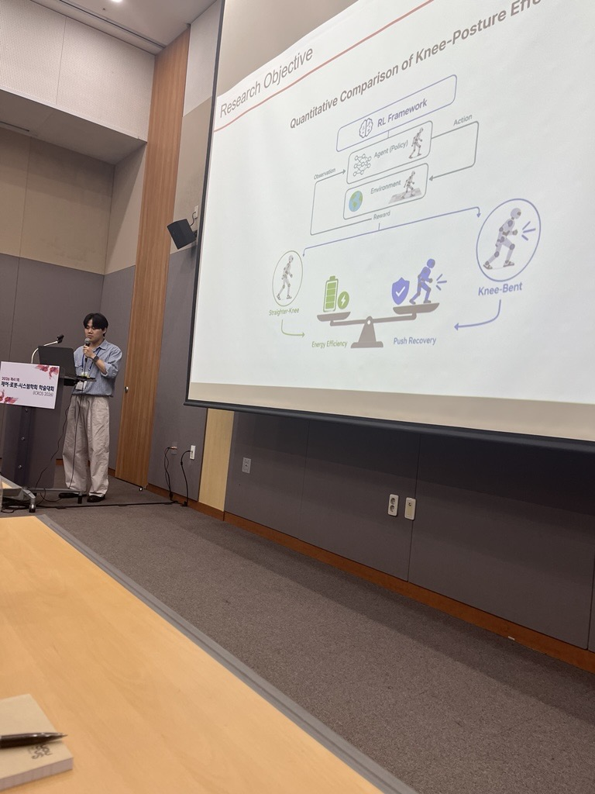
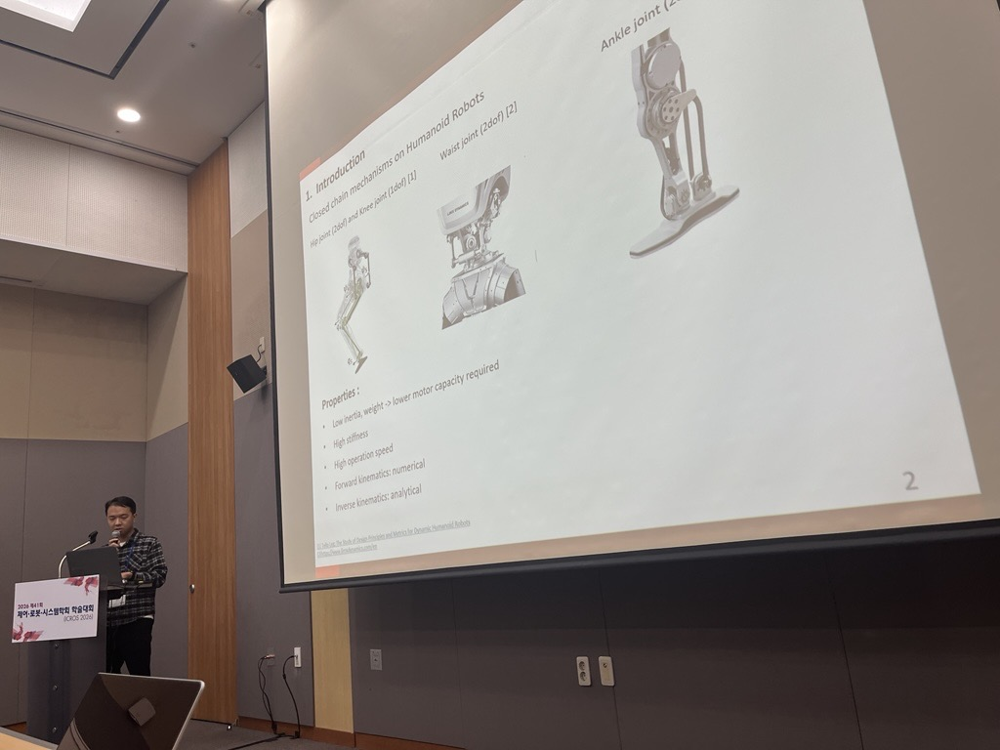
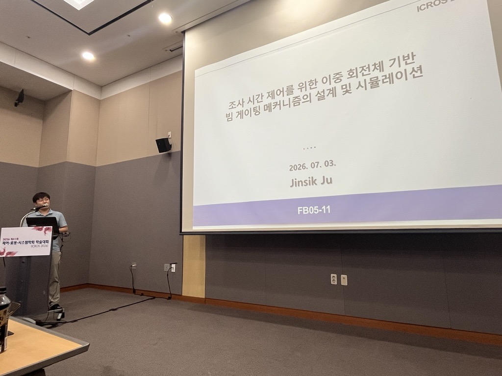
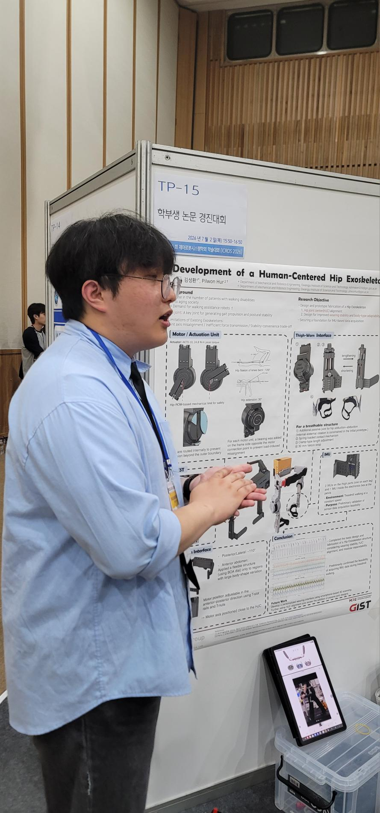
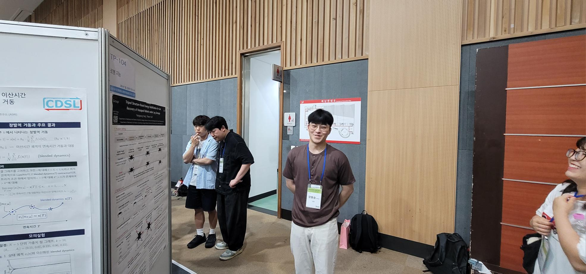
민석 씨는 강화학습 기반 이족보행 연구와 모션 모방을 위한 보상 설계 연구까지 총 두 편을 발표했습니다. 한 편을 준비하는 것만으로도 쉽지 않은데, 두 연구를 연달아 발표하는 모습을 보니 그동안 얼마나 바쁘게 준비했을지 느껴졌어요. 두 발표 모두 무사히 마친 민석 씨에게 고생했다는 말을 전하고 싶습니다.
저 역시 포스터 발표를 진행했는데 처음 참석한 학회에서 제 연구를 직접 설명해야 한다는 생각에 발표 전에는 조금 긴장했습니다. 하지만 막상 포스터 앞에서 설명을 시작하고 질문에 답하다 보니, 생각했던 것보다는 금방 적응할 수 있었어요. 여러 사람에게 같은 연구를 반복해서 설명하면서 어떤 부분을 먼저 이야기해야 이해하기 쉬운지도 조금씩 알게 되었던 것 같습니다.
2일차의 모든 발표 일정이 끝난 뒤에는 연구실 구성원들과 함께 고기를 먹으러 갔습니다. 대구는 고기로 유명하다고 해서 잔뜩 기대하고 갔었던 것 같아요. 발표가 끝나고 먹는 고기라서 그런지 엄청 맛있게 먹었습니다. 맛있는 고기를 먹으며 이런저런 이야기를 나누다 보니 시간도 금방 흘렀고, 결국 회식은 새벽 4시가 넘어서야 끝났습니다. 덕분에 다음 날 너무 힘들었습니다….
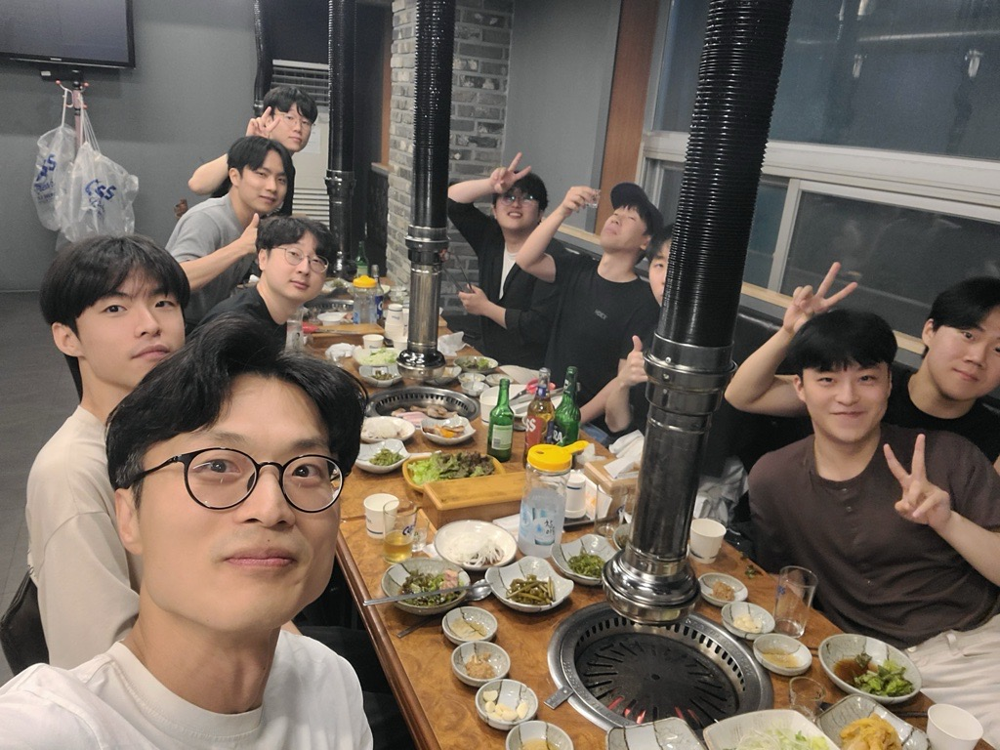
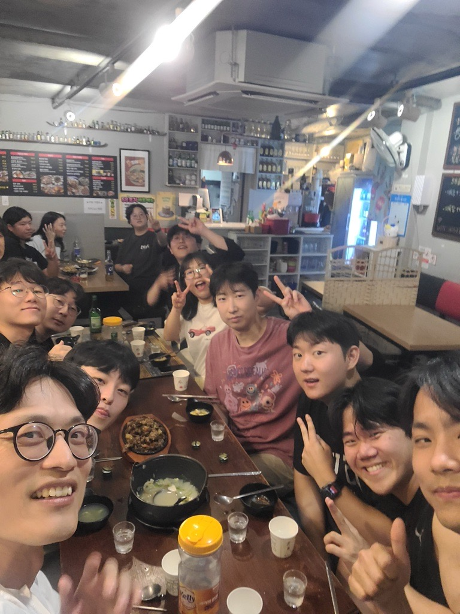
이번 ICROS 학술대회는 저에게 처음으로 참석한 학회이자, 처음으로 제 연구를 직접 발표한 자리였습니다. 발표 전에는 긴장도 많이 했지만, 발표를 준비하는 과정 그리고 연구에 관한 질문도 받아보면서 평소에는 쉽게 해보기 어려운 경험을 할 수 있었다고 생각합니다. 발표를 마친 뒤에는 다 같이 고기도 먹고 늦은 시간까지 즐겁게 이야기를 나누며 2일차를 마무리했습니다. 긴장된 상태로 시작했지만, 마지막에는 후련하고 즐거운 마음으로 끝낼 수 있었던 기억에 남는 하루였습니다.
3일차 이야기로 곧 다시 찾아오겠습니다!
작성자: 이한결
ICROS 학회 마지막 날에도 다양한 연구 발표를 들으며 최신 연구 동향을 접할 수 있는 뜻깊은 시간을 보냈습니다. 또한 연구실 단체 사진 촬영과 Banquet, 그리고 볼링을 통해 연구실 구성원들과 더욱 친밀해질 수 있었던 하루였습니다.
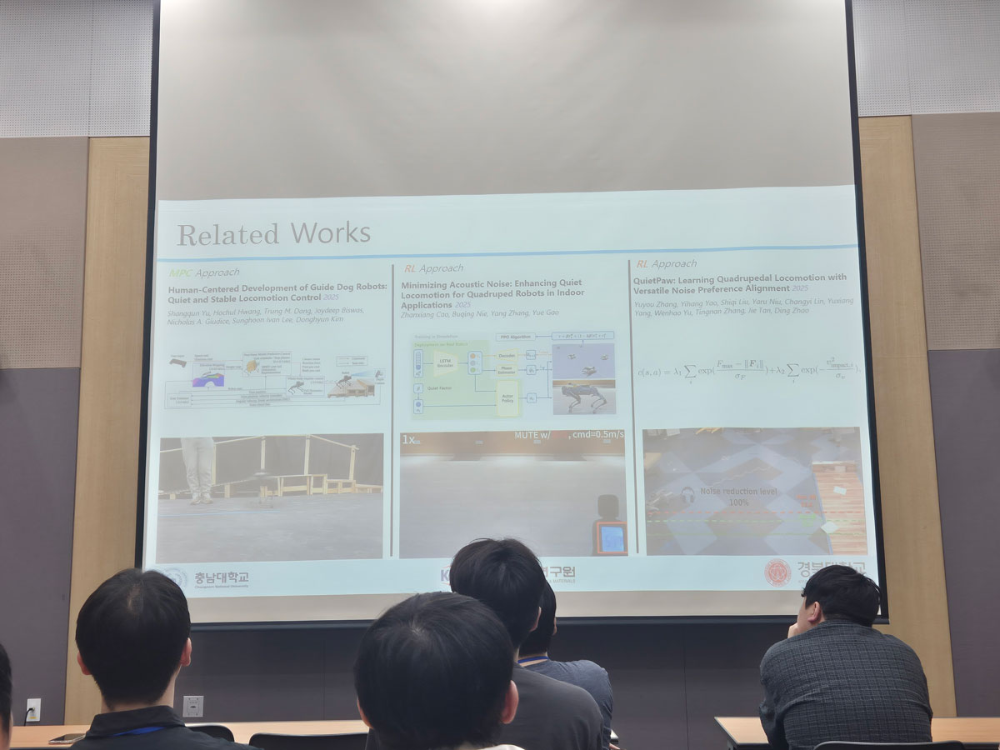
먼저 학회에서는 여러 흥미로운 연구 발표가 이어졌습니다. 서울대학교에서는 Radar 센서를 활용하여 불안정한 지형에서도 Localization 성능을 향상시키는 연구를 발표하였고, 한국기계연구원에서는 4족 보행 로봇의 보행 소음을 줄이기 위한 연구를 소개했습니다. 서로 다른 접근 방식으로 실제 로봇 시스템의 성능을 향상시키려는 연구들을 접하며 많은 것을 배울 수 있었습니다.
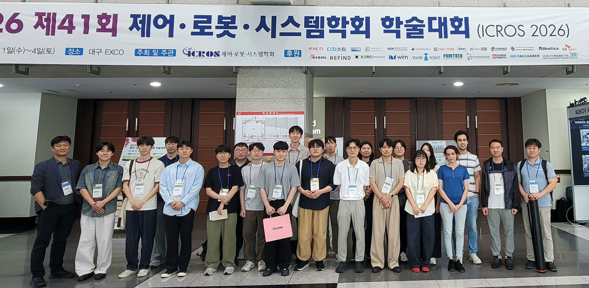
발표가 끝난 후에는 연구실 단체 사진을 촬영했습니다. 한자리에 모인 연구실 구성원들을 보니, 정말 다양한 분야에서 활발하게 연구가 이루어지고 있음을 다시 한번 느낄 수 있었습니다. 이번 ICROS에서도 많은 연구실 구성원들이 직접 연구를 발표하며 그동안의 노력과 연구 역량을 보여주는 의미 있는 시간을 가졌습니다.
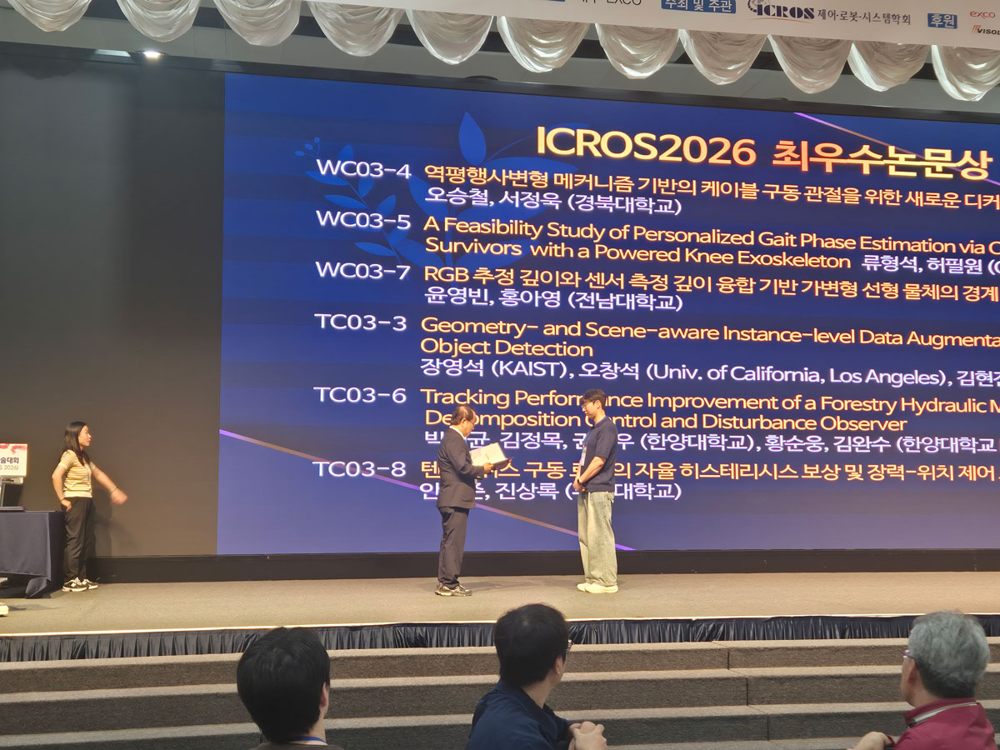
저녁에는 Banquet이 진행되었습니다. 맛있는 식사를 함께하며 학회 기간 동안의 경험과 소감을 나누었고, 이어진 시상식에서는 반가운 소식도 있었습니다. 우리 연구실의 류형석 박사과정이 "A Feasibility Study of Personalized Gait Phase Estimation via Continual Learning in Stroke Survivors with a Powered Knee Exoskeleton"라는 주제로 최우수논문상을 수상했습니다. 연구실 구성원 모두가 함께 축하하며 더욱 뜻깊은 시간을 보낼 수 있었습니다. 다시 한번 진심으로 축하드립니다!
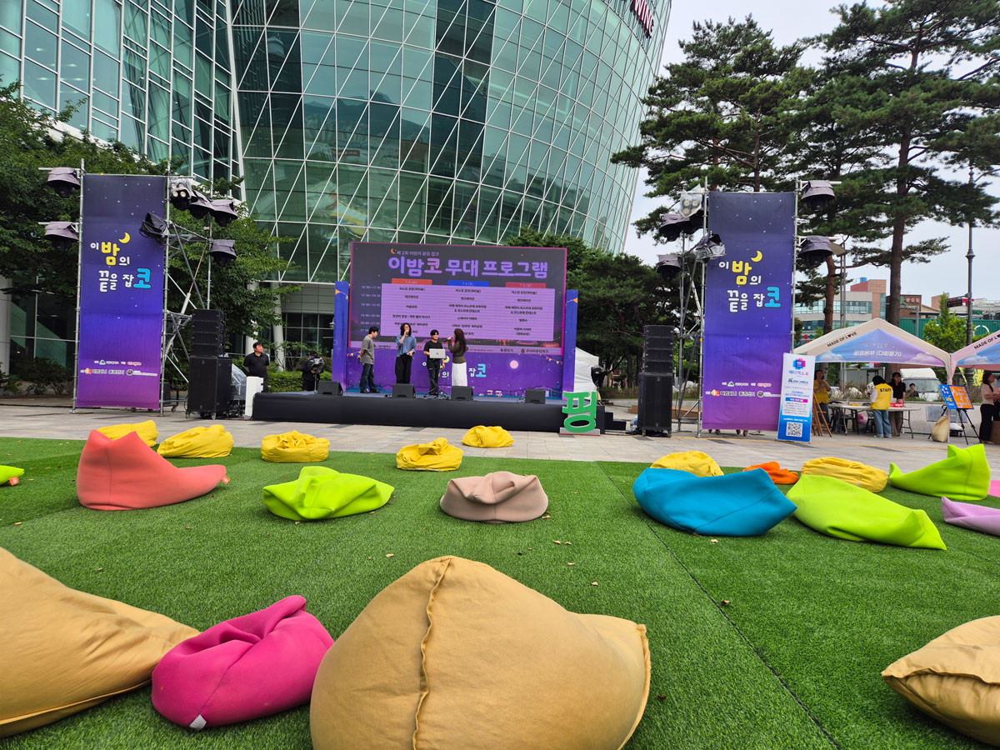
학회가 열린 대구 EXCO에서는 마침 '이 밤을 잡코' 페스티벌도 함께 진행되고 있었습니다. Banquet 전후의 짧은 시간을 이용해 몇몇 연구실 구성원들과 공연을 관람했는데, 분위기와 선곡이 모두 인상적이어서 학회의 또 다른 즐거운 추억으로 남았습니다.
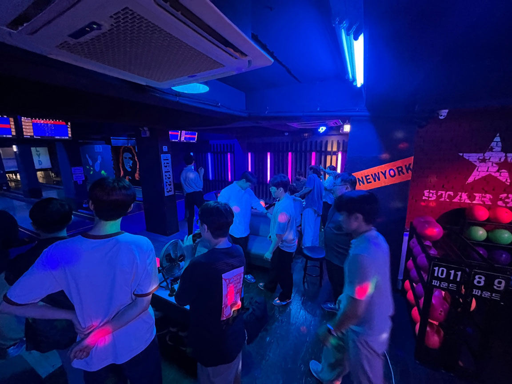
모든 공식 일정이 끝난 후에는 연구실 단체 볼링을 진행했습니다. 총 19명이 두 팀(9명 대 10명)으로 나누어 연구실 청소를 걸고 승부를 펼쳤습니다. 치열한 대결 끝에 평균 점수가 더 높았던 9명 팀이 승리했고, 패배한 팀은 아쉽게도 연구실 청소를 맡게 되었습니다. 승패를 떠나 모두가 함께 웃고 응원하며 즐거운 시간을 보냈고, 연구실 구성원들 간의 친밀감도 한층 높아졌습니다.
이렇게 ICROS 2026의 마지막 날은 연구 발표를 통해 새로운 지식을 얻고, 연구실의 우수한 연구 성과를 함께 축하하며, 구성원들과 소중한 추억을 만들 수 있었던 뜻깊은 하루였습니다. 마지막으로 이번 2026 ICROS 프로그램 위원장을 맡아 학회의 성공적인 운영을 위해 힘써주신 허필원 교수님께도 감사와 존경의 말씀을 전합니다. 덕분에 많은 연구자들이 함께 배우고 교류할 수 있는 훌륭한 학회가 되었습니다.
모든 연구실 구성원 여러분, 2026 ICROS 정말 고생 많으셨습니다!
허필원 교수님을 비롯해 이강우 박사님, 그리고 주진식, 조권승, 성지윤, 차명주, 문선웅, 류형석, 박혜원, Van Thanh Nguyen, 박수영, 김성현, 김민석, 배성환, 박제현, 김래헌, Mahta Akhyani, Hesam Haddad, 양용승, 이한결, 김성환, 김채린까지, 이번 학회는 정말 많은 얼굴들과 함께했습니다.